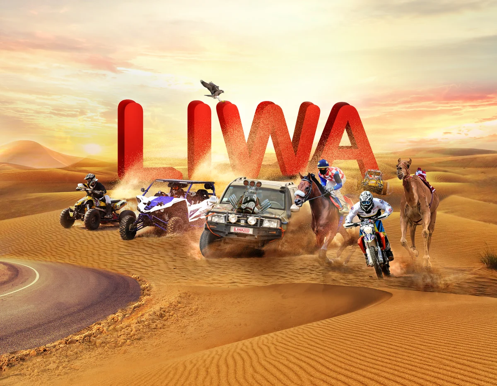
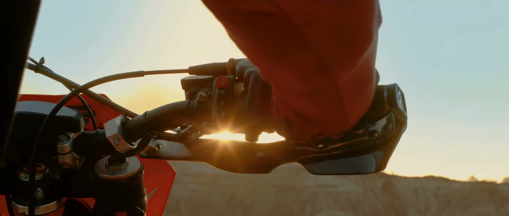
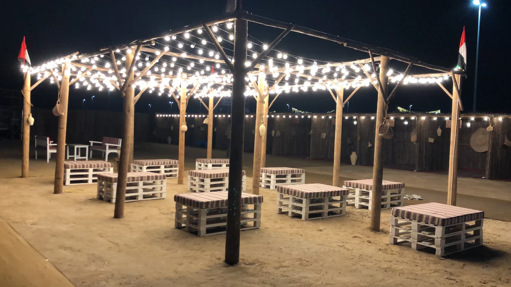
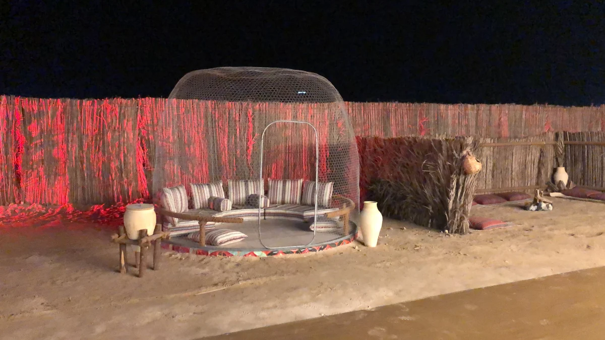
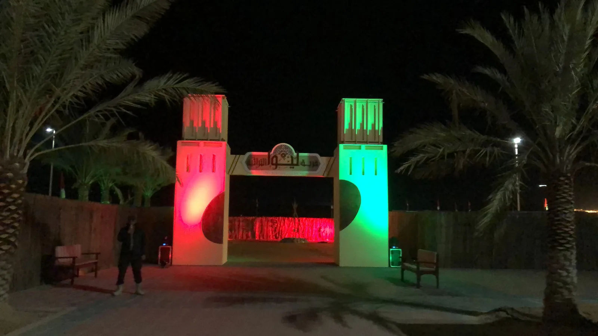
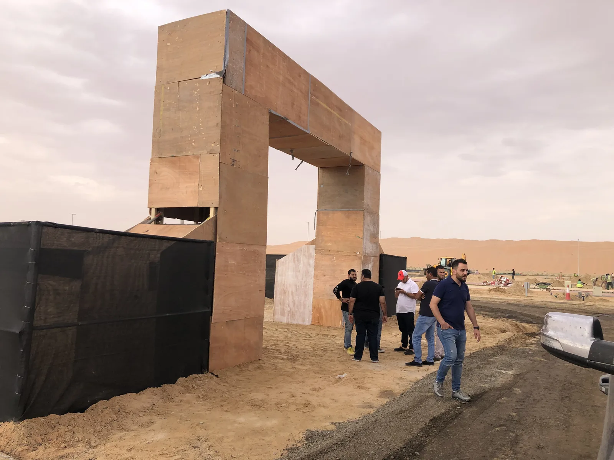
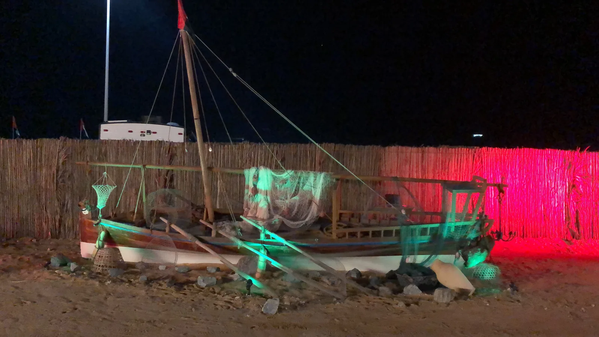
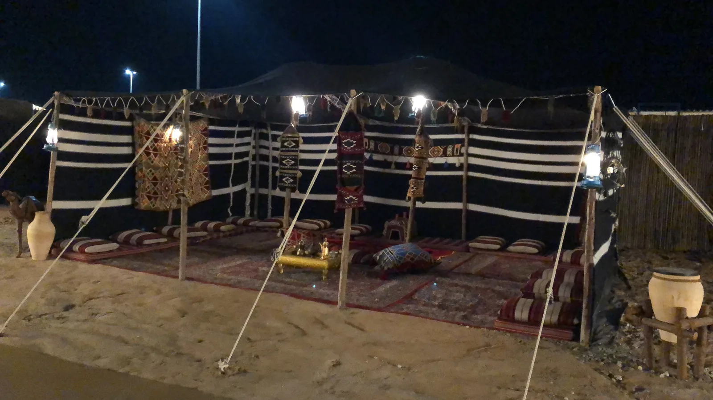
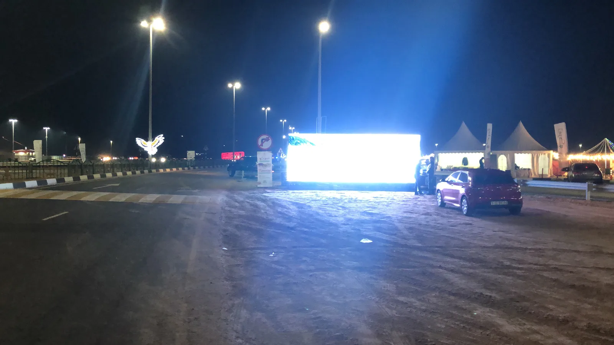

LIWA
Let the desert challenges begin.Sixteen days of desert motorsport at the foot of a 984-foot dune.
Desert sport set the pace.
Read more
I led the campaign and the festival’s visitor side, three big areas and three small ones, through AntBrush, bringing our creative team and production partners together around one idea: Let the desert challenges begin.
In briefAntBrush was the main agency: the campaign, and the festival’s visitor side, built from nothing.
Liwa International Festival 2020 · Tal Moreeb, Abu Dhabi · Dec 26, 2019 – Jan 10, 2020
Campaign by AntBrush · Creative Director, Brand & Experiential: Antoni Gerges
Picture a motorsport weekend, a state fair and a desert music festival in one, at the foot of a 984-foot dune, 153 miles from Abu Dhabi. Every winter the foot of Tal Moreeb becomes a town of camps, arenas and floodlights.
Patron: H.H. Sheikh Hamdan bin Zayed Al Nahyan, Ruler’s Representative in Al Dhafra. The sport was run by Liwa Sports Club; the client was Abu Dhabi Sports Council, for the festival’s Higher Organising Committee.
Liwa International Festival 2020 ran at Tal Moreeb, Abu Dhabi, from 26 December 2019 to 10 January 2020: sixteen days at the foot of a 984-foot dune, four hours from Dubai.
Client: Abu Dhabi Sports Council. AntBrush was the main agency, on a US$1 million festival contract: the campaign, the brand, and three big areas and three small ones, built from nothing.
The sports were the festival’s own: the hill climb up Tal Moreeb, drifting, horse and camel races, among its 14 competitions.
The sports films on this page are cut from the festival film, which is made from footage of earlier editions.
Three routes went to the client. The client chose the letters: LIWA, the size of dunes, with every sport bursting out of them.


The key visual, two posters (Ready?!! and Let the desert challenges begin), the outdoor artwork, the lamppost banners, social posts, and the sign system for the site.
The kit, in our revised designs of 6 December 2019: the VIP kit (bag, box, folder and invitation), access cards and lanyards, the brochure with the race schedules, wristbands, flags, and T-shirts and jackets for the organisers and security.
The 3D scenes are models made for this portfolio from the campaign’s own artwork and working files: the outdoor artwork and the lamppost banners on the road in, three of the nine sign panels, and the Liwa Land gate.
On the sign panels the festival’s logo is the lower rectangle of the final logo, at its printed size, and the labels are shown in English. The gate’s pieces are at the sizes written on our elevation of 23 December 2019; its arch is an estimate.
The three films of the site are my own, from my phone: the Layali Moreeb gate on 21 December 2019, skydivers over the festival on opening day, 26 December, and the dunes at sunset on 3 January 2020. The photographs of the pergola and the glass-dome majlis are mine too, from the night before opening.
In the festival’s own figures: 252,006 visitors, up 68% on the edition before. 16 days, 14 competitions. 100+ radio adverts, and 50+ on billboards and buses. 455 Arab media outlets contacted, and 25 foreign. 29 sponsors.
Source: the festival’s post-event report, March 2020. Visitors are its estimate: at least three people for each of 84,002 vehicles counted.
The festival, its competitions and the dune belong to Abu Dhabi Sports Council and Liwa Sports Club.
What we delivered.
The whole job: the campaign, the TVC and the radio, the print and the signs, and the zones, built and run for 16 days.
Campaign & print
- Campaign: concepts, bilingual copy, ATL and BTL, press kit, stationery, social posts
- Magazine spreads in Zahrat Al Khaleej and National Geographic Al Arabiya
- A belly band, a bilingual brochure, the 16-day programme
- Race tickets
- Signs and directional boards
Film & radio
- TVC, 61 seconds: written, directed, produced
- Radio spots
- Radio airtime: 396 spots, 105 presenter mentions, three contests
Zones
- Family and games zone, 16 days: bouncy castles, slides, climbing walls, a maze, a race track
- Outdoor cinema, 16 nights, with the films’ rights, projection and sound
- Desert Café Layaly Moreeb: two zones, 200 seats, two kitchens
- Heritage village: 20 shops, tents and carpets, heritage shows on four dates
- A supply tent and a majlis
- Hospitality for 400 guests

The key visual 
The TVC, 61 seconds 
Desert Café Layaly Moreeb: the pergola 
Desert Café Layaly Moreeb: bubble-tent seating
From the purchase order, 12 invoices with their delivery notes, and the completion of works of 13 January 2020.
A dune, and a town at its foot.
Tal Moreeb is a 984-foot dune on the edge of the Empty Quarter, 153 miles from Abu Dhabi and four hours from Dubai. Every winter a town of more than 2,000 tents rises at its foot.
Picture a motorsport weekend, a state fair and a desert music festival in one, and an agency that built its visitor side from nothing in six weeks.
Appointed directly, 42 days out.
The festival’s Higher Organising Committee appointed us directly, without a tender. Opening night was 42 days away.
42
- Oct 28Our quotation, for the whole festival
- Nov 12Written approval from the organizers
- Nov 14Purchase order, signed by the committee’s chairman
- Dec 7Campaign approved
- Dec 19Areas due
- Dec 26Opening night
From our mail record and the purchase order of Nov 14, 2019.
Read more
Sixteen days, the longest yet.
The longest edition in the festival’s history: 16 days, 14 competitions, and an estimated 252,006 visitors.
Source: the festival’s post-event report, March 2020. Visitors are its estimate. Sixteen days: our festival brochure.
 04 · What we built · on our own map
3D model · made for this portfolio · from our map and drawings
04 · What we built · on our own map
3D model · made for this portfolio · from our map and drawings
We drew the map, then built on it.
We drew the festival’s map, then built its visitor side on open sand: a family park, a desert café and a heritage village — three big areas and three small ones.
On open sand.
Our map, at the foot of Tal Moreeb: 984 feet high, about a mile long. Three big areas rise on their places; three small ones, among them the kids’ cinema, a 400-seat lounge and the team camp.
Liwa Land.
The FUN ZONE: a 164 × 328-ft family park with inflatables, games, a kids’ car track and an outdoor cinema.
Layali Moreeb.
“Moreeb Nights”: a desert café for 200 behind a blue arched gate, under the dune.

How the model was made
The map is our festival map of 16 December 2019, its Arabic lettering left out and its six logo pins left blank; the dune is drawn at its true height. The gates are modelled from our drawings at their drawn sizes (the Heritage Village gate: towers 700 cm high, a 450 cm opening); the Liwa Land gate’s arch is an estimate, and Layali Moreeb’s gate is shown without its lettering.
Fourteen competitions, sixteen days.
Fourteen competitions in sixteen days — from the Moreeb Dune Car Championship to the Falcon Race.
Freestyle Drift
Dec 26–27 · Motorsport
Liwa Drift (EDC)
Dec 28 · Motorsport
Falcon Race
Dec 29–30 · Traditional Sports
Buggy Torque
Dec 31 · Motorsport
Liwa UTV
Jan 1 · Motorsport
Horse Race
Jan 1 · Traditional Sports
UTV & Buggy Race
Jan 2 · Motorsport
Liwa Ride
Jan 3 · Attractions
Car Stunt Race
Jan 3–4 · Motorsport
Camel Race
Jan 3 · Traditional Sports
Shooting
Jan 5–6 · Traditional Sports
Pigeon Hunt
Jan 7 · Traditional Sports
Burnout Show
Jan 8 · Motorsport
Moreeb Dune Car Championship
Jan 9–10 · Motorsport
Festival film · footage of earlier editions
The full race card
- Freestyle Drift · Dec 26–27 · Racetrack · 4x4 Nissan and 4x4 Toyota · round one Dec 26, the final Dec 27
- Liwa Drift (EDC) · Dec 28 · Racetrack · saloon cars only
- Falcon Race · Dec 29–30 · Falcon Arena · Jeer and Jernas classes
- Buggy Torque · Dec 31 · Main Stage arena · buggies; teams from the UAE, Kuwait, Saudi Arabia and Oman
- Liwa UTV · Jan 1 · UTV racetrack · turbo and non-turbo buggies
- Horse Race · Jan 1 · Madinat Zayed track · Arabian horses only, two rounds
- UTV & Buggy Race · Jan 2 · UTV racetrack · six classes, from buggies to four-wheelers
- Liwa Ride · Jan 3 · Madinat Zayed to Moreeb Dune · a ride, not a race
- Car Stunt Race · Jan 3–4 · Main Stage arena · 8-cylinder, 6-cylinder and Hilux
- Camel Race · Jan 3 · Al Tharwania track · eight rounds
- Shooting · Jan 5–6 · Shooting Arena · .22 and air rifle · new this edition
- Pigeon Hunt · Jan 7 · Falcon Arena · one class
- Burnout Show · Jan 8 · Racetrack
- Moreeb Dune Car Championship · Jan 9–10 · The dune face · six classes · the finale
The sport was run by Liwa Sports Club. We designed and promoted every competition: its page in our 34-page brochure, its line in the 16-day program, its posts; and race tickets for seven of them. Names and dates as printed in our final brochure, December 2019. Buggy Torque and the Car Stunt Race have no film in the festival film, so their names climb without one.
The finale, straight up.
The finale, the Moreeb Dune Car Championship: trucks built only for this sand sprint straight up the dune. Six classes; each winner took about US$56,000.
Cars and bikes under the lights.
After dark: Freestyle Drift, Liwa Drift, the Burnout Show, Buggy Torque, UTVs and bikes on the sand drag.
Read more
The desert’s own contests.
And the desert’s own contests: Arabian horses, camels, falcons, pigeons — and, new this year, shooting.
Read more
Liwa Ride: 54 miles, 73 bikes.
Liwa Ride, January 3: billed as the UAE’s longest motorcycle motorcade — 73 bikes, 54 miles from Madinat Zayed to the foot of the dune.
73
motorbikes, Madinat Zayed to Moreeb Dune · 54 miles
Read more
The evening the ride reached the dune, from where I stood. Route, times and the festival’s claim from our brochure; 73 bikes from the festival’s post-event report. A 2020 film of the ride is on The Liwa Story.
The family side, built from nothing.
Liwa Land, the FUN ZONE: a 164 × 328-ft family park with inflatables, games, a kids’ car track and an outdoor cinema. Layali Moreeb, “Moreeb Nights”: a desert café for 200 behind a blue arched gate. And a village of 20 craft shops — bare sand on December 15, lit on opening night.
Three small areas besides, among them the kids’ cinema, a 400-seat lounge and the team camp.
Liwa Land

Ten inflatable games for sixteen days, six carnival games, a remote-control car track for kids. And the Majid kids’ cinema: twelve films on a 30 × 17-ft air screen, sixteen nights.
Layali Moreeb
200 seats, two kitchen tents and twenty gas heaters; a lit pergola, glass-dome seating and a majlis; an oud player and a singer four hours a day.

Read more







43,400 square feet: twenty craft shops of 10 × 10 ft in palm frond on steel, a dhow, a henna majlis, a Bedouin tent and coffee kiosks; heritage bands on four dates. My own film and photographs.
Sixteen nights, announced and filled.
Sixteen nights: five headline concerts and six fireworks shows over the dune — and our zones lit and full until late.
The stage, its concerts and the fireworks were the festival’s own. We announced them, and kept our areas lit and full around them.
- ThuDec 26Eida Al Menhali
- FriDec 27Aryam
- SatDec 28
- SunDec 29
- MonDec 30
- TueDec 31Hamad Al Ameri
- WedJan 1
- ThuJan 2
- FriJan 3Al Wasmi
- SatJan 4
- SunJan 5
- MonJan 6
- TueJan 7
- WedJan 8
- ThuJan 9Balqees
- FriJan 10
Opening night
Eida Al Menhali · fireworks over the dune
Every night
- Thu Dec 26 · Opening night · Eida Al Menhali · fireworks over the dune
- Fri Dec 27 · Aryam · Concert · fireworks
- Sat Dec 28
- Sun Dec 29
- Mon Dec 30
- Tue Dec 31 · Hamad Al Ameri · New Year’s Eve · fireworks at midnight
- Wed Jan 1
- Thu Jan 2
- Fri Jan 3 · Al Wasmi · Concert · fireworks · Liwa Ride arrives
- Sat Jan 4
- Sun Jan 5
- Mon Jan 6
- Tue Jan 7
- Wed Jan 8
- Thu Jan 9 · Balqees · Concert · fireworks
- Fri Jan 10 · Closing night · Fireworks over the dune
Concerts on the festival stage, 8 to 10 pm; fireworks at 10 pm over the dune (New Year’s Eve at midnight). From our final festival brochure, December 2019; six fireworks shows in the festival’s post-event report.
Read more


One question, on every surface.
One question — READY?!! — on TV, radio, buses, lampposts, tickets, signs and The Liwa Story, the festival’s official social channel, launched by AntBrush.
The Liwa Story
The Liwa Story, on Facebook, Instagram, X, YouTube and Snapchat: 226,708 views, 611 posts and 26 video coverages in the festival’s post-event report.
Read more
12 · The campaign · in space
3D model · made for this portfolio · from the campaign’s own artwork
Then the campaign,
in space.
The road in, the signs, the children’s gate: each from its own artwork.
The road in.
One billboard, then the lampposts, one line each.
The signs.
One sign system for a town built in weeks.
Liwa Land.
The children’s fun zone, entered through a gate built like a toy cinema.
The letters,
the size of dunes.
Three routes went to the client. They chose the letters, with every sport bursting out of them.


Read more


The result.
13 · In the festival’s own figuresSource: the festival’s post-event report, March 2020. Its estimate.
In the organizers’ own count: an estimated 252,006 visitors, up 68%; 455 Arab and 25 foreign media outlets; 226,708 views on The Liwa Story.


More figures
Visitors are the report’s estimate: at least three people for each of 84,002 vehicles counted.
Creative Director, Brand & Experiential
A US$1 million festival contract.
Sports films: the festival film. Site films: my own.

3 January 2020
Full credits
Client: Abu Dhabi Sports Council, for the Higher Organising Committee of Liwa International Festival 2020.
AntBrush, main agency — a contract of over US$1 million. Creative Director, Brand & Experiential: Antoni Gerges.
Sports: Liwa Sports Club. Sports films: AntBrush’s festival film, cut from earlier editions. Site films and photographs: my own.
The launch and program films are clips from The Liwa Story, AntBrush’s channel for the festival.